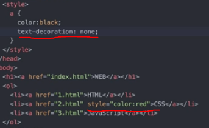

CSS

css는 head에 <.style>,<./style>을 추가한 뒤에 그 사이에 입력한다.
스타일 사이에 있는 것은 선택자이고 style태그를 써서 하는 것은 HTML의 속성이다.

text-decoration을 이용하여 텍스트를 꾸밀수 있다
기초적인 문법
id선택자>class선택자>tag선택자, id는 중복이 되서는 안된다. 구체적인 것이 포괄적인 것보다 우선 선택 되도록 했다